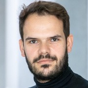

AtPS


2022 Bachem Award Winner

Charalampos (Babis) Pappas
University of Freiburg
Charalampos (Babis) Pappas is a junior group leader the Cluster of Excellence Living, Adaptive and Energy-autonomous Materials Systems (livMatS) at the University of Freiburg. His group focuses on systems chemistry approaches towards the discovery of life-like peptide matter. Babis received his Bachelor’s and Master’s degree in Chemistry from the University of Ioannina. In 2016, he received his Ph.D. degree entitled ”Supramolecular Systems Chemistry using Peptides” from the University of Strathclyde in Glasgow working in the group of Prof. Rein Ulijn. After a short 6-month postdoctoral stay at the City University of New York, in 2017 he received a Marie Curie Fellowship and moved to the University of Groningen, where he worked with Prof. Sijbren Otto on dynamic folded macromolecules.